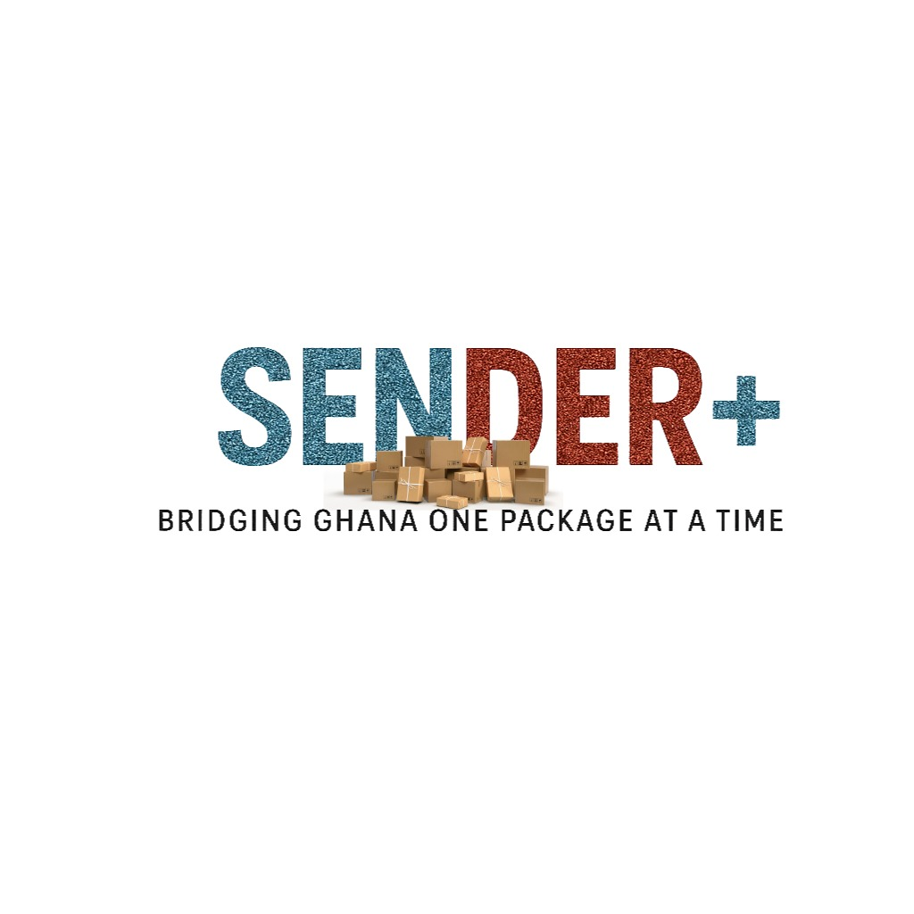
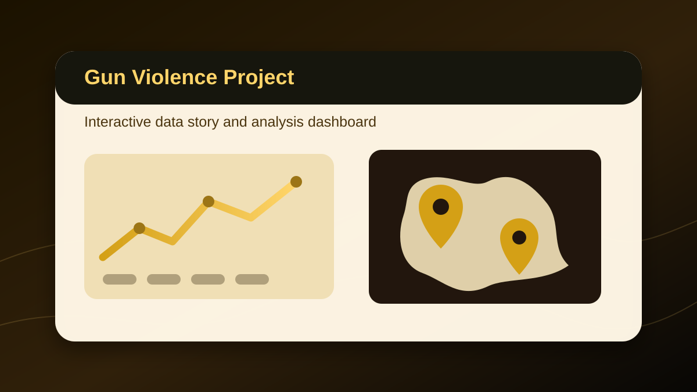
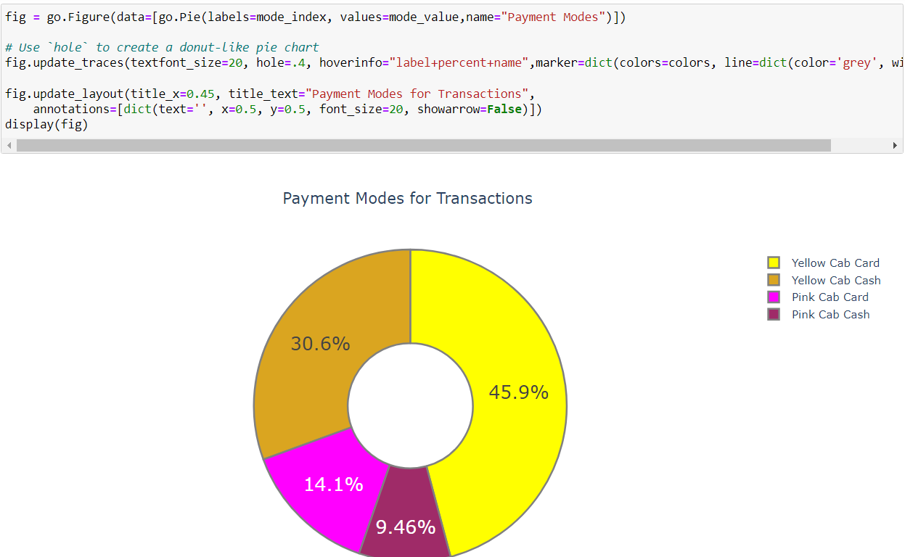
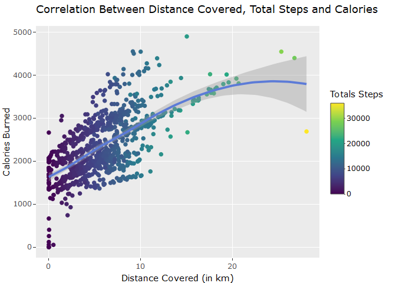
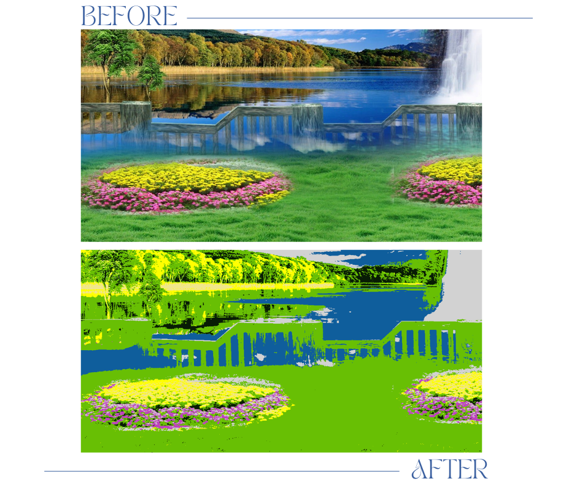
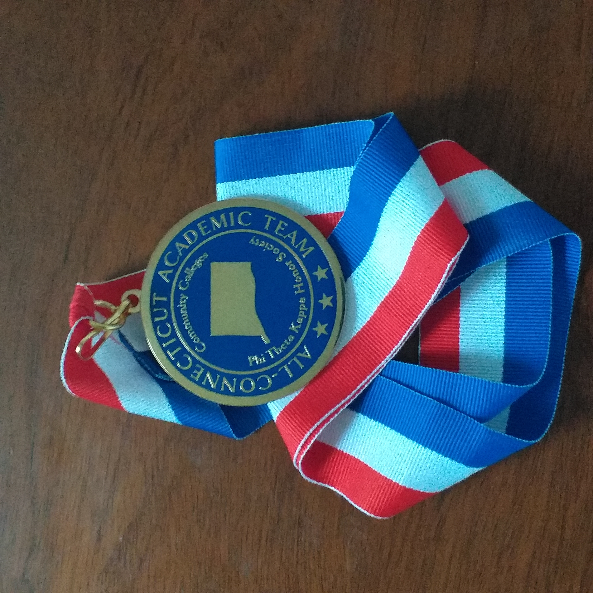

Sender+
A Ghana-focused, tech-enabled delivery company creating a more reliable and structured package-delivery experience.
BuildingData Scientist · Systems Thinker · Data Analyst
I’m Gideon Osei Bonsu. I connect analysis, product thinking, and thoughtful systems to build solutions that create measurable value.
Beyond the résumé
I bring analytical rigor, a learner’s mindset, and a deep commitment to creating work that improves how people live, learn, and work.
I’m currently based in the Office of the Provost at GVSU, where I serve as a Strategic Planning, Assessment, and Accreditation Graduate Assistant while pursuing an M.S. in Data Science & Analytics.
Grounded in character
Meeting every challenge with an open mind and every person with respect.
Finding joy in lifelong learning and seeking a deeper understanding of the world.
Giving each endeavor the sustained care and effort that excellence requires.
Building · Researching · Exploring
A Ghana-focused, tech-enabled delivery company creating a more reliable and structured package-delivery experience.
BuildingAn AI-assisted evidence workspace for managing, analyzing, and preparing higher-education accreditation documentation—designed to streamline accreditation and strategic-planning workflows.
In developmentExtending my existing interactive gun-violence project into formal research on patterns, contributing factors, and evidence-informed intervention.
Research in progressMy Christian faith is central to who I am – calling me to worship God and serve the Lord Jesus in spirit and truth, and to bring love, care, healing, and light to the communities I'm a part of.
Selected work
Projects at the intersection of data, technology, and human needs—each grounded in a question worth answering.

01 / FeaturedProduct strategy · Full-stack development
A Ghana-focused, tech-enabled delivery company providing reliable package delivery for students, individuals, and small businesses through doorstep delivery, accessible service locations, digital booking, and package tracking.
Explore Sender+ ↗
02Research in progressIndependent research · Data analysis

03Investment analysis

04Consumer behavior

05Unsupervised learning
A growing body of learning, leadership, research, and product work shaped by curiosity and service.
M.S. in Data Science and Analytics
Grand Valley State University — Grand Rapids, MI
Began graduate study in Data Science and Analytics, focusing on applied data analysis,
statistical modeling, machine learning, data visualization, and analytics-driven decision support.
Enrolled in the Master's in Applied Mathematics program at Elizabeth City State University.
Graduated with Summa Cum Laude honors from Elizabeth City State University, earning a BSc. Computer Science degree with a concentration in Data Science and a minor in Mathematics.

Completed the Google Data Analytics Professional Certification
Completed Associate of Science in Liberal Arts and Science degree at Manchester Community College, CT
Transferred to Manchester Community College, CT
Enrolled in Stevenson University BSc. Computer Information Systems program
Desktop Support Student Technician
GVSU IT Services
Provided technical support for university devices, printers, docks, monitors, networking issues,
imaging/reimaging workflows, and classroom/lab technology support. Assisted with troubleshooting
Windows and Mac systems, network printers, hardware setup, and end-user support tickets.
Strategic Planning, Assessment & Accreditation Graduate Assistant
Office of the Provost, Grand Valley State University
Supported institutional assessment, accreditation, and strategic planning work through data
cleaning, KPI/dashboard support, documentation, website updates, and analysis of institutional
planning materials. Worked with systems and processes connected to student learning outcomes,
accreditation evidence, and institutional reporting.
Worked as a Graduate Research and Teaching Assistant at the Department of Mathematics, Computer Science and Engineering Technology at Elizabeth City State University
Stopped working as a data analyst
Started working as a Data Analyst for Therapeutic Innovations Inc.
Started volunteering as a Data Science Intern at the non-profit company - Changing The Present
Worked as a Commercial Real Estate Analyst Intern at Project Destined
Strategic Business Development Extern
The Home Depot
Researched market disruptors and innovative trends; synthesized implications into an
executive-style recommendation and was one of only 5% of externs selected to present findings to
the company’s global Strategic Business Development team.
Peer tutor for Calculus I and II, Python Programming, Number Theory, Java Programming, C++ Programming and other mathematics and computer science courses with Elizabeth City State University's Office of Student Success and Retention
Worked as a digital marketing intern through the Meta Career Connections Fellowship.
Worked as a Student Assistant at Stevenson University Conference Services
IdeaQuest Accelerator & Pitch Participant / College of Computing Pitch Champion
GVSU Center for Entrepreneurship & Innovation
Participated in GVSU's IdeaQuest accelerator and pitch process, developing and presenting an
entrepreneurial technology concept. Recognized as a College of Computing Pitch Champion.
Co-Founder / Product Lead
Sender+ Courier
Co-founded and leads product development for a Ghana-focused, tech-enabled delivery company serving
students, individuals, and small businesses through digital booking, package tracking, doorstep
delivery, and accessible service locations. Received Semi-finalist honors
during the Grand Rapids DeepTech 2025 Pitch after deploying the Sender+ MVP.
Participated in Thurgood Marshall College Fund's intensive five-day entrepreneurial development and pitch competition program, dubbed "The Pitch 2023" in Winston Salem, NC.
Independent Gun Violence Research
Extending my existing interactive gun-violence data project into formal research examining patterns,
contributing factors, and opportunities for evidence-informed intervention.
Evidence Vault
Developing an AI-assisted workspace for managing, analyzing, and preparing higher-education
accreditation documentation to streamline accreditation and strategic-planning workflows.
Guest Data Analysis Consultant
ASA DataFest 2026
Supported undergraduate teams during ASA DataFest by advising on data interpretation, cleaning,
analysis strategy, and visualization within the competition rules.
Build Fellowship Student Consultant
Open Avenues Foundation
Worked on an applied AI/RAG chatbot project focused on conversational document interaction.
Contributed to product thinking, data/document workflows, and AI application development
concepts.
Viewers’ Choice Award Winner – “High Performance Computing (HPC) in the City” Hackathon
Texas Advanced Computing Center, HackHPC, Science Gateways Community Institute — Austin, TX
(Remote)
Leveraged access to the Frontera supercomputer, using R to analyze and visualize the relationship
between zip code social vulnerability index (SVI) scores and mobility in Austin, TX, both before
and during the pandemic.
Registration Assistant
Economic Club of Grand Rapids 37th Annual Dinner
Assisted with event registration and guest support for a major civic and business community event
in Grand Rapids, which featured keynote remarks from former Presidents George W. Bush and Bill
Clinton.
Volunteer Cultural Mentor during the Blandford School International Night Project in Allendale, MI. Mentored a local 6th-grade student on his project on Ghana, guiding research and supporting poster and food presentation.
Peer Mentor - VESTEMic Sophomore Bridges Program
Elizabeth City State University — Elizabeth City, NC
Appointed by the computer science department head to mentor 30 sophomores in this specialized
program aimed at accelerating their learning in various STEM courses, coupled with dedicated
professional development sessions.
Awarded the Johnny L. Houston "Most Impressive Senior-Year Computer Science Student" award at Elizabeth City State University
Emerged as the winner of the university-wide Annual Writing Contest at Manchester Community College, in the non-fiction category

Inducted into the state of Connecticut's prestigious Phi Theta Kappa 2021 All-Academic Team, which honors the 30 most outstanding students from the state's 12 community colleges annually
I’m currently seeking a Fall 2026 or Spring 2027 internship or full-time role in Data Analytics, Data Science, Product Management, or Systems Analysis. I’m also open to collaborations on SenderPlus.